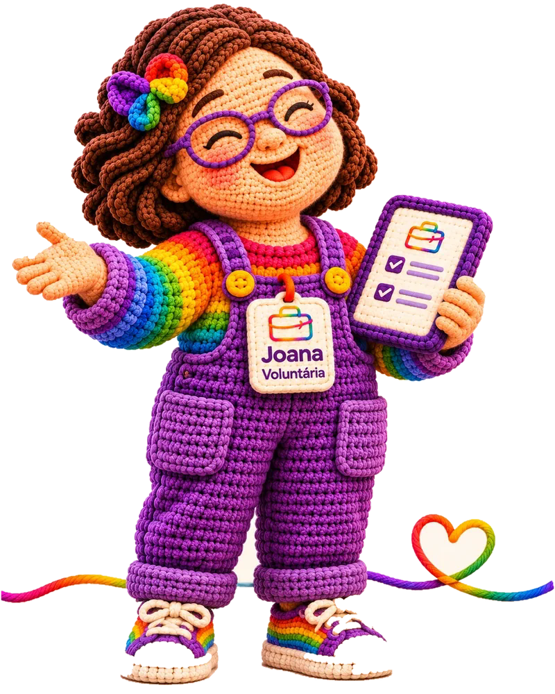
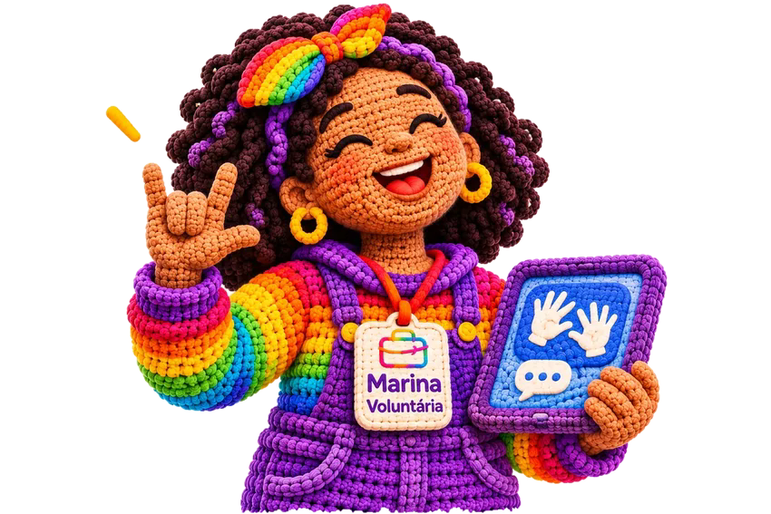

Vida real
Reconhecer que cada pessoa tem uma trajetória, necessidades e responsabilidades próprias.
A Novelo propõe contribuir para esse campo por meio de uma plataforma digital que organiza oportunidades, respeita escolhas individuais e incentiva relações profissionais mais transparentes.
Uma pessoa pode estar preparada para uma oportunidade profissional e, ainda assim, não conseguir aceitá-la. Não por falta de competência, mas porque os horários, o deslocamento ou as condições de contratação não se encaixam nas responsabilidades que fazem parte da sua vida.
Para quem cuida de crianças, familiares idosos ou pessoas com deficiência, essas dificuldades podem influenciar tanto o acesso ao trabalho quanto a permanência nele.
A Novelo nasce da proposta de tornar essas condições mais visíveis na relação entre profissionais e empresas, sem transformar a vida pessoal de quem procura trabalho em motivo de exposição ou discriminação.
Essa perspectiva dialoga com a Política Nacional de Cuidados, instituída pela Lei nº 15.069/2024, e com o Eixo 2 do Plano Nacional de Cuidados, dedicado à compatibilização entre trabalho remunerado, educação e necessidades familiares de cuidado.
A Novelo propõe contribuir para esse campo por meio de uma plataforma digital que organiza oportunidades, respeita escolhas individuais e incentiva relações profissionais mais transparentes.

O nome Novelo reúne a ideia de um novelo de fios e a expressão novo elo.
A marca representa trajetórias diferentes que se encontram para construir possibilidades compartilhadas. O fio multicolorido simboliza diversidade, continuidade e conexão.
Um novelo é formado por um único fio enrolado, que pode percorrer diferentes caminhos e criar inúmeras possibilidades. Quando está bem organizado, esse fio pode ser desenrolado e utilizado com facilidade. Mas, quando é puxado sem cuidado ou perde sua organização, pode se embaraçar e formar nós difíceis de desfazer.
Essa imagem também ajuda a explicar o funcionamento da plataforma.
Quando as condições de uma vaga estão desorganizadas ou escondidas, o encontro entre profissionais e empresas pode se embaraçar. Organizar essas informações antes da conexão ajuda a formar elos mais sustentáveis.
A Novelo propõe que essa organização seja feita dos dois lados, respeitando aquilo que cada participante deseja e pode oferecer.

Reconhecer que cada pessoa tem uma trajetória, necessidades e responsabilidades próprias.
Aproximar competências profissionais de oportunidades efetivamente compatíveis.
Reconhecer que conciliar trabalho e cuidado não deve ser uma responsabilidade exclusivamente individual.
Reúne as condições e preferências de cada pessoa, sem exigir que exponha seus motivos pessoais.
Organiza as condições de trabalho, os benefícios, os recursos de acessibilidade e os compromissos oferecidos pela empresa.
Representa a conexão construída a partir da compatibilidade entre essas duas realidades e concretizada pelo interesse mútuo.
A metáfora do fio não é apenas uma escolha estética. Ela orienta a maneira como a Novelo pretende organizar informações, respeitar trajetórias e construir novas oportunidades.
A Novelo orienta seu desenvolvimento por seis valores:
reconhecer a importância das relações de apoio na vida e no trabalho.
permitir que profissionais e empresas participem das decisões de compatibilidade.
garantir liberdade para definir preferências, restringir contatos e controlar informações pessoais.
reduzir barreiras que dificultam a participação em processos seletivos.
valorizar competências sem transformar circunstâncias pessoais em critérios de exclusão.
proteger dados desde a concepção da plataforma, de acordo com os princípios da LGPD.
Esses valores precisam aparecer nas funcionalidades, não apenas na comunicação da marca.
A Novelo possui ambientes específicos para pessoas candidatas, empresas e administração. Seu funcionamento combina perfis profissionais, condições de trabalho, compatibilidade e interesse mútuo.
Reúne as condições e preferências de cada pessoa, sem exigir que exponha seus motivos pessoais.
Organiza as condições de trabalho, os benefícios, os recursos de acessibilidade e os compromissos oferecidos pela empresa.
Representa a conexão construída a partir da compatibilidade entre essas duas realidades e concretizada pelo interesse mútuo.
A experiência contempla as seguintes funcionalidades:
criação de uma conta individual para administrar informações profissionais, preferências e oportunidades.
configuração da área de atuação, nível de experiência, formação, competências, cidade, pretensão salarial, resumo profissional e currículo.
espaço que reúne as condições consideradas importantes para a pessoa aceitar uma oportunidade. Inclui dias e horários disponíveis, modalidade de trabalho, flexibilidade, limite de deslocamento, necessidades de acessibilidade, benefícios e assistências desejados. Também permite informar, de maneira opcional, circunstâncias relacionadas às responsabilidades de cuidado. A empresa não recebe os motivos pessoais dessas preferências, apenas as informações necessárias à conexão profissional.
seleção dos setores e portes de empresas permitidos, bloqueio de organizações, autorização de compartilhamento e controle da visibilidade das informações.
área privada para consultar e atualizar o cadastro, a Trama da Vida, o currículo e as configurações pessoais. Não há perfil público nem acesso das empresas ao banco geral de pessoas candidatas.
apresentação de vagas em cartões, com informações sobre a empresa, condições oferecidas e indicadores de compatibilidade. A pessoa pode consultar os detalhes, demonstrar interesse por meio da ação Tecer Elo ou seguir para outra oportunidade.
acompanhamento das oportunidades de interesse e das conexões estabelecidas com empresas.
comunicação entre candidata e empresa após o interesse mútuo, com acompanhamento de entrevistas, mensagens e demais etapas do processo seletivo.
recurso opcional para avaliar a clareza das informações, a comunicação, a organização do processo e o respeito às condições declaradas.
apresentação profissional opcional em áudio de até 30 segundos. A pessoa pode gravar, ouvir, substituir ou remover sua apresentação. O áudio não influencia a pontuação e seu compartilhamento depende de autorização.
avaliações opcionais inspiradas no modelo Big Five, com versões rápida e completa, voltadas ao autoconhecimento profissional. Seus resultados não são critérios automáticos de exclusão.
possibilidade de utilizar uma fotografia própria ou criar um avatar personalizado com a identidade visual da marca, sem obrigatoriedade de exposição da imagem pessoal.
suspensão temporária da participação em novas correspondências, preservando cadastro, preferências e informações para posterior retomada, sem penalidade.
acompanhamento de novos elos, mensagens, entrevistas, atualizações e lembretes, com possibilidade de configurar os canais de comunicação.
administração dos dados pessoais, consentimentos, empresas bloqueadas, histórico de acessos, preferências de comunicação e solicitações relacionadas aos direitos da pessoa titular.
espaço para esclarecer dúvidas sobre a plataforma, suas regras, processos seletivos e proteção de dados.
A Trama da Vida é uma das principais características da Novelo.
Em vez de exigir explicações pessoais para justificar preferências profissionais, o aplicativo permite que a pessoa informe diretamente as condições que tornam uma oportunidade viável.
Uma candidata pode indicar que precisa encerrar sua jornada às 17 horas, prefere trabalho remoto ou considera essencial um auxílio-creche. Não precisa informar se é mãe, com quem mora ou por que necessita dessas condições.
O preenchimento das preferências é individual e pode ser alterado conforme sua vida se reorganiza.
Informações sobre cuidado ou acessibilidade que possam revelar dados pessoais sensíveis permanecem protegidas e não são utilizadas para discriminar ou reduzir a pontuação.
As empresas também possuem um espaço próprio, com funcionalidades para:
identificação da organização, CNPJ, setor econômico, porte, localização e contato de recursos humanos.
conferência institucional antes da participação nos processos de correspondência.
criação de oportunidades com área profissional, requisitos, níveis aceitos, localização, remuneração e competências desejadas.
configuração integrada das condições oferecidas em cada vaga, incluindo jornada e flexibilidade, acessibilidade, benefícios e assistências, apoio ao cuidado e compromissos da empresa.
definição dos requisitos profissionais e do percentual mínimo de correspondência de competências.
manifestação de interesse por pessoas compatíveis e continuidade do contato somente quando houver reciprocidade.
comunicação com participantes conectadas e organização das etapas de recrutamento.
avisos sobre correspondências, interesses recebidos, mensagens e mudanças nos processos seletivos.
recebimento de devolutivas que ajudem a identificar melhorias necessárias na comunicação e no recrutamento.
reconhecimentos por compromissos e práticas verificáveis relacionados à acessibilidade, transparência, cuidado, proteção de dados e melhoria das condições de trabalho.
O Novelo da Vida Real organiza, em um único lugar, as informações que permitem compreender como é trabalhar naquela organização e naquela vaga.
A empresa declara suas condições, informa as regras de utilização e mantém esses dados atualizados. A candidata, por sua vez, pode compreender o que está sendo oferecido antes de demonstrar interesse.
A organização dessas informações também permite identificar pontos que precisam ser esclarecidos ou negociados, evitando que diferenças importantes sejam descobertas somente depois da contratação.
Assim, a empresa organiza seu novelo e a pessoa configura sua trama. A Novelo aproxima essas duas realidades para identificar onde podem ser tecidos novos elos.
O objetivo não é atribuir uma nota de cuidado à empresa, mas tornar suas condições de trabalho mais transparentes e verificáveis.
O Novo Elo é o mecanismo de conexão entre profissionais e oportunidades.
Ele reúne duas dimensões complementares: compatibilidade profissional e compatibilidade com a vida real.
Compatibilidade profissional: considera área de atuação, nível, competências, localização e remuneração.
Compatibilidade com a vida real: compara as preferências da Trama da Vida às condições informadas no Novelo da Vida Real, incluindo jornada, flexibilidade, acessibilidade, benefícios e assistências.
O aplicativo permite que a pessoa identifique quais condições correspondem às suas preferências e quais precisam de atenção antes de aceitar uma oportunidade.
Essas dimensões podem ser apresentadas separadamente, evitando que informações pessoais ou necessidades de acessibilidade sejam transformadas em penalidades na pontuação profissional.
A pessoa pode demonstrar interesse em uma oportunidade mesmo quando nem todas as preferências estiverem contempladas. A existência de uma necessidade de acessibilidade não deve ser utilizada para impedir automaticamente uma candidatura.
O Novo Elo se concretiza quando existe interesse mútuo. Somente então ocorre o compartilhamento autorizado das informações necessárias ao contato.
A Novelo utiliza elementos de gamificação para incentivar compromissos coletivos, sem transformar empresas em concorrentes por pontos ou posições.
Os badges representam práticas verificáveis e melhorias realizadas pelas organizações.
clareza das informações sobre vagas e condições de trabalho.
medidas de acessibilidade e eliminação de barreiras.
práticas de conciliação e apoio às responsabilidades de cuidado.
acolhimento de avaliações e realização de melhorias.
participação em práticas de acompanhamento e retorno ao trabalho.
observância dos compromissos de proteção de dados estabelecidos pela plataforma.
Os badges não formam rankings. As empresas podem seguir trilhas de melhoria, registrar compromissos e compartilhar práticas que contribuam para a evolução coletiva.
A concessão dos reconhecimentos depende de critérios transparentes, evidências e revisão. O cumprimento de obrigações legais não deve ser apresentado como vantagem extraordinária.
O ambiente administrativo reúne as funções de governança da plataforma:
Verificação e gestão das empresas cadastradas.
Controle de permissões e suspensão de acessos.
Registro de eventos relevantes para auditoria.
Acompanhamento das condições declaradas nas vagas.
Gestão de avaliações, relatos e solicitações de correção.
Curadoria e revisão dos badges.
Produção de indicadores agregados sobre oportunidades, processos e participação.
A proteção de dados pessoais é uma condição central do funcionamento da Novelo.
A plataforma adota como referência os princípios da Lei Geral de Proteção de Dados Pessoais (Lei nº 13.709/2018), especialmente finalidade, necessidade, transparência, segurança e prevenção de discriminação.
o cadastro principal não exige informações pessoais desnecessárias, como idade, estado civil, número de filhos, CPF ou fotografia.
o compartilhamento de informações depende de uma escolha expressa e informada.
cada pessoa administra suas preferências, pode pausar o currículo, revogar autorizações e solicitar a exclusão dos dados.
empresas não possuem acesso irrestrito a um banco geral de pessoas candidatas.
as informações de contato são disponibilizadas nas condições autorizadas, após interesse mútuo.
condições pessoais, informações relacionadas ao cuidado e necessidades de acessibilidade são utilizadas somente para as finalidades informadas, sem exposição desnecessária aos recrutadores.
fotografias, avatares e apresentações em áudio não são requisitos de participação nem modificam a pontuação.
os acessos às informações profissionais devem ser registrados para permitir acompanhamento e auditoria.
autenticação individual, armazenamento privado, permissões específicas e procedimentos de resposta a incidentes.
acesso, correção, revogação de consentimento, eliminação e portabilidade, conforme as condições previstas na legislação.
As empresas assumem compromissos de utilização dos dados exclusivamente para os processos seletivos autorizados, sem repasse indevido ou formação de bancos paralelos.
A Novelo organiza sua contribuição em duas frentes complementares:
Recolocação profissional: conectar pessoas a oportunidades compatíveis, com informações claras sobre requisitos e condições de trabalho.
Retorno e permanência: apoiar o acompanhamento de pessoas que regressam de licenças e afastamentos, com registro de condições, compromissos, solicitações de ajustes e revisões.
O acompanhamento também pode permitir verificar se as condições informadas durante a seleção correspondem à experiência vivida após a contratação.
A proposta reconhece que permanecer no emprego não depende apenas da decisão individual. Também envolve a organização do trabalho e a capacidade das empresas de assumir compromissos.
A Novelo reúne, em uma mesma proposta, tecnologia de recrutamento, autonomia profissional, transparência das condições de trabalho e proteção de dados.
Sua relação com a Política Nacional de Cuidados está na possibilidade de contribuir para a compatibilização entre trabalho remunerado e responsabilidades de cuidado, envolvendo também as empresas nessa construção.
A plataforma não substitui serviços públicos, políticas de cuidado ou obrigações trabalhistas. Ela oferece instrumentos para tornar mais claras as condições de participação profissional e apoiar relações de trabalho mais sustentáveis.
A Novelo parte de uma ideia simples: para construir um elo, não basta encontrar duas pontas. É preciso compreender como elas podem se conectar sem que alguém tenha de assumir sozinho todo o esforço.